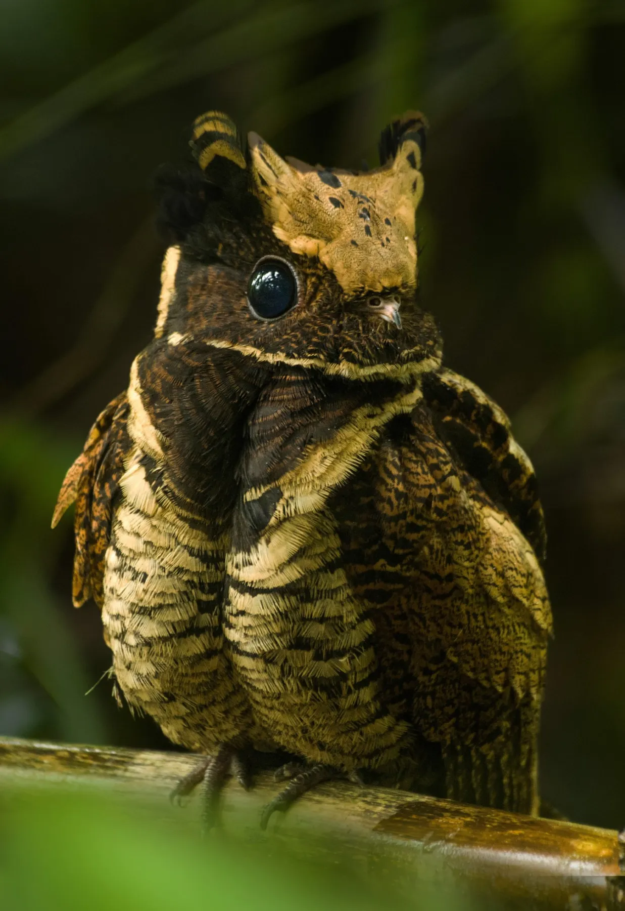
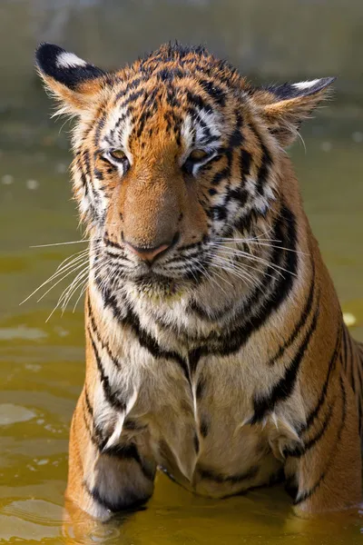
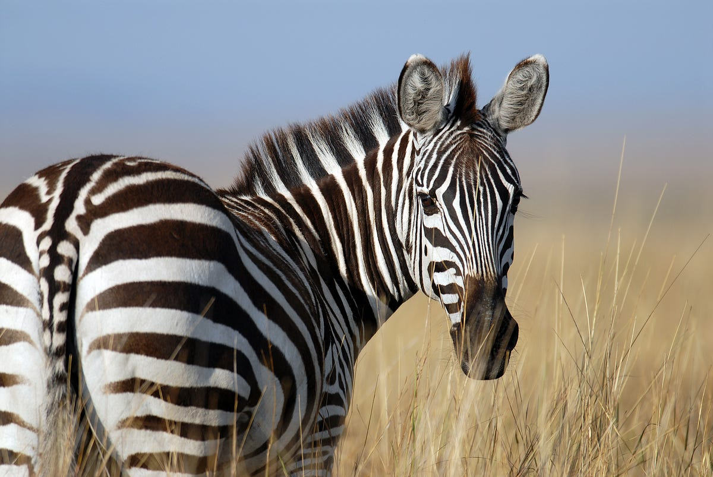

At the Catherine Dews Zoo we keep a total of twelve animals and five different species. Continue reading to learn more!
Nightjar Birds
Nightjars are known for their large ears and adorable faces. They also inspired the look of the dragon Toothless in the well known Dreamworks film "How to Train Your Dragon". You can read more about Nightjars using the link below.
this is a link to Nightjars - Bugs
- Ears
Giraffes
Did you know that a giraffe's spots are unique to them the way fingerprints are to humans? They also sleep for an average of 4.6 hours a day! You can read more about giraffes using the link below.
this is a link to Giraffes- Edwin
- Connie
Fennec Foxes
Fennec foxes are the smallest of fox breeds. They also have ears that grow to be half the size of their body so that they can better hear their prey underground! You can read more about fennec foxes using the link below.
this is a link to Fennec Foxes
- Pepper
- Robert
Tigers
Tigers can live to be 25 years old! They love to lounge around and play in water as well. You can read more about tigers using the link below.
this is a link to tigers - Willow
- Ziggy
- Finn
Zebras
Contrary to popular belief, zabras are in fact black with white stripes. You can read more about zebras using the link below.
this is a lik to zebras - Jane
- Rocky
- Trey